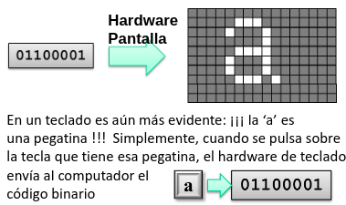
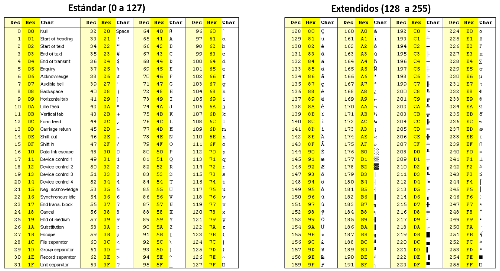
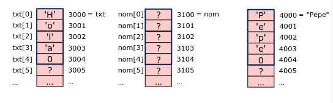
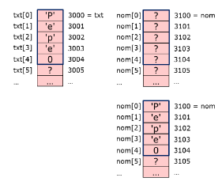

Cadenas de Caracteres
Introducción al computador y el lenguaje C
Ingeniería de Sistemas y Automática - Universidad de Oviedo
Codificación de texto
Al igual que otros conceptos "abstractos" (días de la semana, tipos de fruta, etc.), el texto se codifica como números enteros:
- Cada carácter de un texto está codificado por un valor entero.
- Todos los computadores deben utilizar la misma codificación para entenderse entre ellos: códigos ASCII y UNICODE.
- Puesto que no hay muchos caracteres diferentes, no es necesario un elevado nº de bits para codificarlos todos:
- ASCII: 8 bits = 256 caracteres diferentes.
- UNICODE: 16 bits = 65536 caracteres diferentes.
Se utiliza el tipo de datos char para indicar un entero con el nº de bits necesarios (8/16) para codificar un carácter.
Ejs: 'a' ≡ 97 'b' ≡ 98 'c' ≡ 99 '.' ≡ 46 '0' ≡ 48 '1' ≡ 49 '\n' ≡ 10
Codificación de texto
char letra;
letra = 'a';1*2⁶ + 1*2⁵ + 1*2⁰ = 97
suma = letra + 4; // 103

La tabla de códigos ASCII
ASCII utiliza 8 bits = 256 valores diferentes:

Operaciones con caracteres
Se opera igual que con datos enteros (son enteros).
char c1, c2;
c1 = 'a';
c2 = c1 + 2; // c1=97 (0x61), c2=99 (0x63)='c'
if (c2 >= 'a' && c2 <= 'z')
printf("El carácter %c es una letra minúscula\n", c2);- char getchar(); // Pide un carácter por consola
- putchar(char c); // Escribe un carácter en consola
- int isalpha(char c); // Devuelve V si c está entre 'a'..'z' ó 'A'..'Z'
- char toupper(char c); // Devuelve mayúscula si era minúscula
Códigos para caracteres "especiales" comienzan con \:
'\n', '\0', '\"', '\\'.
Cadenas de caracteres (string)
Un texto es una secuencia ordenada de caracteres, por tanto en C será un array de char (en inglés string).
char txt[4];
int n = 4;
txt[0] = 'H';
txt[1] = 'o';
txt[2] = 'l';
txt[3] = 'a';char txt[5]; // Un elemento más
txt[0] = 'H';
txt[1] = 'o';
txt[2] = 'l';
txt[3] = 'a';
txt[4] = 0; // o '\0'0 = '\0' ≠ '0' = 48).
Cadenas de caracteres (string)
Se pueden manejar constantes de tipo string, colocando el texto entre comillas dobles:
char txt[5] = "Hola";| Índice | Valor | Dirección |
|---|---|---|
| txt[0] | 'H' | 3000 = txt |
| txt[1] | 'o' | 3001 |
| txt[2] | 'l' | 3002 |
| txt[3] | 'a' | 3003 |
| txt[4] | 0 | 3004 |
| txt[5] | ? | 3005 |
Una constante tipo string es un const char*, y se puede utilizar en cualquier lugar del código que lo acepte:
// En <stdio.h>
int printf(const char* fmt, ...);
// En nuestro programa
int x = 3, y = 2;
printf("x vale %d, y vale %d\n", x, y); // Recibe dirección de comienzoCadenas de caracteres (string)
Sólo se puede asignar el contenido de un string a una constante en el momento de su declaración:
char txt[5] = "Hola"; // Correcto
char nom[5];
nom = "Pepe"; // Incorrecto, ¡equivale a 3100 = 4000!
nom = txt; // Incorrecto, ¡equivale a 3100 = 3000!
Cadenas de caracteres (string)
Todas las operaciones con string requieren recorrer los elementos de la tabla uno por uno, terminando al alcanzar el carácter 0:
char txt[5] = "Pepe";
char nom[5];
int i, iguales;
// Copiar txt a nom
for (i = 0; txt[i] != 0; i++) {
nom[i] = txt[i];
}
nom[i] = 0; // ¡Añadir terminador nulo! (nom vale lo mismo que txt)
// Comparar nom y txt
if (nom == txt) // MAL: Siempre falso (3000 == 3100)
iguales = 1;
for (i = 0; txt[i] != 0; i++) {
iguales = iguales && (txt[i] == nom[i]);
}
// Aquí: iguales (V o F) indica si son iguales
Operaciones con strings
Funciones para E/S de strings:
- char* gets(char* cad); // Pide una cadena por consola
- int puts(const char* cad); // Escribe una cadena en consola
printf() y scanf().
char nombre[20];
char apellido[20];
printf("Nombre: ");
gets(nombre);
printf("Apellido: ");
gets(apellido);
printf("Nombre completo: %s %s\n", nombre, apellido);Funciones de cadena de caracteres
Realizan los bucles más típicos en el tratamiento de strings (copiar, comparar, añadir, buscar, ...). Trabajan con tablas de char terminadas en el caracter 0. Incluir <string.h>.
- Trabajan con tablas de char terminadas en el caracter 0.
- Incluir
<string.h>.
| int strlen(const char* cad); | Devuelve longitud de cadena |
| char* strcpy(char* dst, const char* src); | Copia src en dst |
| char* strncpy(char* dst, const char* src, int n); | Copia máx n caracteres (no incl. nulo) |
| char* strcat(char* dst, const char* src); | Añade src al final de dst |
| char* strncat(char* dst, const char* src, int n); | Añade máx n caracteres (incl. nulo) |
Funciones de cadena de caracteres
| int strcmp(const char* str1, const char* str2); | Compara códigos ASCII. Devuelve: 0 ⇒ iguales, <0 ⇒ str1 anterior, >0 ⇒ str1 posterior. |
| int strncmp(const char* str1, const char* src, int n); | Id. con máximo n caracteres. |
| char* strchr(const char* str, char c); | Busca caracter c en cadena cad. |
| char* strstr(const char* str, const char* substr); | Busca subcadena substr en cadena str. |
Funciones de conversión de datos
Convierten cadenas de caracteres de/hacia tipos de datos numéricos.
Funciones más utilizadas:| int atoi(const char* cad); | Obtiene entero decimal |
| double atof(const char* cad); | Obtiene valor real |
| double strtod(const char* cad, char** ptEnd); | Obtiene valor real y puntero al final de conversión |
| int sscanf(const char* cad, const char* fmt, ...); | Id. a scanf() pero obteniendo datos de cadena |
| char* itoa(int num); | Obtiene cadena decimal para entero |
| char* ftoa(double num); | Obtiene cadena decimal para real |
| int sprintf(char* cad, const char* fmt, ...); | Id. a printf() pero almacenando en cadena |
Funciones de cadena de caracteres
Ejemplo: pedir nombre y apellido, unirlos, y comprobar si se trata de "Marie Curie".
char nombre[20];
char apellido[20];
char* todo;
printf("Nombre: ");
gets(nombre);
printf("Apellido: ");
gets(apellido);
// Reserva espacio dinámico (+1 para espacio, +1 para \0)
todo = (char*) malloc(strlen(nombre) + 1 + strlen(apellido) + 1);
strcpy(todo, nombre);
strcat(todo, " ");
strcat(todo, apellido);
if (strcmp(todo, "Marie Curie") == 0)
puts("Es una científica\n");
free(todo);Funciones de cadena de caracteres
Ejemplo: pedir comando de texto y extraer valor entero en una variable (.... POS = 90 ....).
char texto[40];
int posicion;
char* cmd;
printf("Comando: ");
gets(texto);
cmd = strstr(texto, "POS"); // Busca subcadena
if (cmd != NULL)
{
// Avanza puntero saltando 'POS' y espacios en blanco
for (cmd = cmd + strlen("POS"); *cmd == ' '; cmd++)
;
if (*cmd == '=')
posicion = atoi(cmd + 1); // Extrae número tras '='
}Conversión y Formato de Cadenas
Funciones de conversión numérica y formateo de texto (<stdlib.h> y <stdio.h>)
atoi, atof, strtod)
#include <stdio.h>
#include <stdlib.h>
int main(void) {
// 1. atoi: Texto a entero (int)
int entero = atoi("452"); // 452
// 2. atof: Texto a real (double)
double real = atof("3.14159"); // 3.14159
// 3. strtod: Texto a double + puntero al final
char entrada[] = "12.50 Voltios";
char *fin;
double v = strtod(entrada, &fin);
// v = 12.50 | fin -> " Voltios"
return 0;
}
sscanf, sprintf)
#include <stdio.h>
int main(void) {
// 1. sscanf: Extrae datos desde un buffer
char reg[] = "Sensor_01 23.5";
char nombre[20];
float temp;
sscanf(reg, "%s %f", nombre, &temp);
// 2. sprintf: Construye una cadena formateada
char mensaje[50];
int id = 101;
sprintf(mensaje, "ID: %d -> Temp: %.1f C", id, temp);
// Reemplaza de forma estándar a itoa() / ftoa()
return 0;
}
Cadenas de caracteres
A tener en cuenta al usar cadenas de caracteres:
- Son tablas como cualquier otra: requieren reserva de espacio en memoria, no hay comprobación de salida de rango, etc.
- No se usa la longitud de la tabla, sino el código especial 0. ¡No se puede olvidar añadir el carácter 0 al manipular strings!
- Se pueden manipular:
- Carácter por carácter, usando índices o punteros.
- Usando funciones de la librería estándar.
- Creando funciones propias, sin parámetro de longitud.
char txt[5] = "Pepe"; strcat(txt," Pérez"); // IncorrectoEs habitual el uso de asignación dinámica de memoria.
Ejercicios propuestos
- Pedir por consola el nombre de una unidad lógica, directorio y archivo, y componer el camino completo hacia el archivo (ej: "c:\user\practicas\ejemplo.txt").
- Comprobar si el archivo anterior tiene extensión "txt" y se encuentra en el subdirectorio "practicas".
- Realizar una función que, dado un comando con el formato "POSICION=valor entero", devuelva el valor entero. Admitir que la palabra clave POSICION sea POS, POSI, POSIC o POSICION, y que haya espacios en blanco antes y después del '='.
- Añadir a la función anterior la posibilidad de devolver un código de error si no se encuentra el comando o el formato es incorrecto.
- Pedir por consola una cadena con el formato "[v1,v2,v3,...vn]" y extraer de la misma los contenidos de una tabla de float con esos valores.